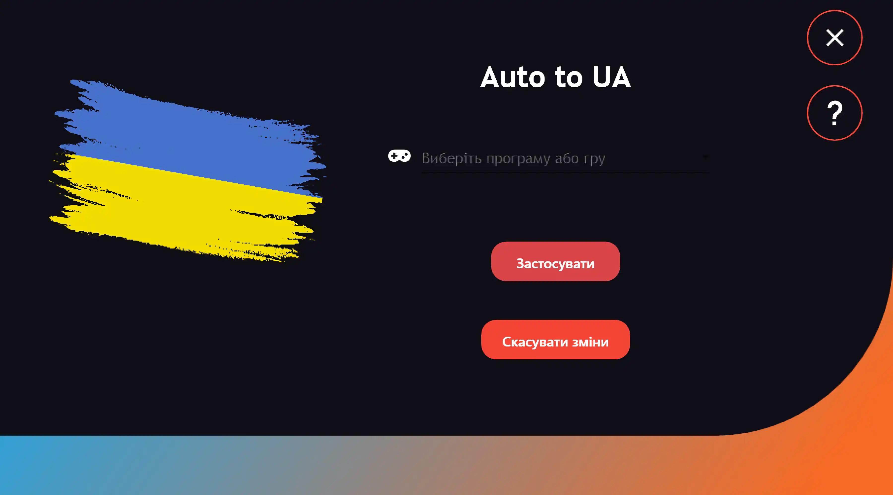
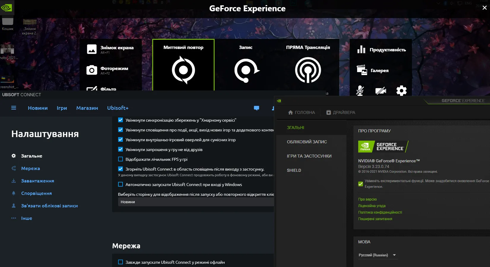

Причина
Цей застосунок був створений, аби зробити мої переклади доступнішими, а їх встановлення зручнішим
Що у меню?
На вибір є 2-ві версії.
1 - це версія зі встановлювачем, вона моє функцію автоматичного оновлення себе і працює трохи швидше, за рахуок
2 - це портативна версія, вона не оновлюється сама(але оновлює вже наявні в ній переклади програм), і працює трохи повільніше, адже всі файли зшиті в 1 файл що відбивається на продуктивності
PS. Насправді відмінності в швидкості роботи неймовірно маленькі, вибираючи - орієнтуйтеся на функцію оновлення.
Навіщо цей застосунок?
Я займаюсь перекладом застосунків на українську мову. Звичайно ці переклади не офіційні, але я намагаюсь зробити їх такими.
Наприклад після перекладу UbisoftConnect я звернувся у тех.підтримку і надіслав повний файл перекладу. Нажаль вони сказали що не можуть мені допомогти і дали посилання на форум для розробників Ubisoft. І ось вже більше місяця мій, ПОВНІСТЮ завершений, переклад ніхто не хоче додавати до застосунку.
Тому я і вирішив зробити цей застосунок. Переклади виходять не часто, адже я працюю над ними один, та й особисте життя у мене є(небагато), і їсти хочеться. Тому якщо вам не важко ви НЕ зможете мені 💳, адже не потрібно мені платити. Користуйтеся наздоров'я 🥰
